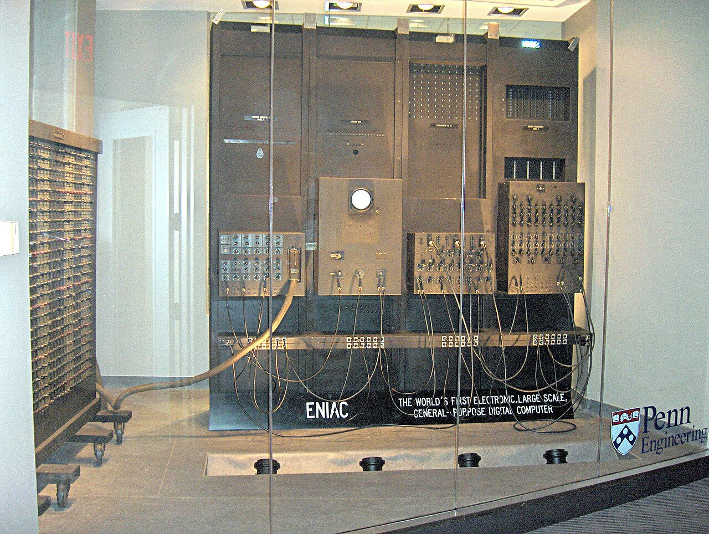
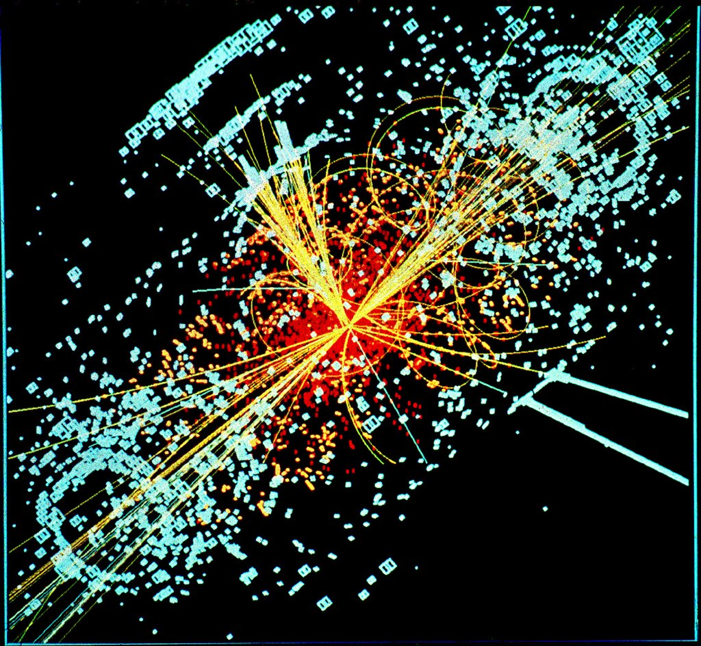

Since the production of the Electronic Numerical Integrator and Computer (ENIAC) by the University of Pennsylvania for the Army in 1946, computing has fundamentally transformed the approach to research in science and engineering. Today, it provides access to a broader design parameter space, enabling the analysis of more cases within a given timeframe or budget. Furthermore, it grants access to phenomena that were previously immeasurable or inaccessible for experimental study, thus giving rise to new materials, components, and manufacturing technologies [1].
In high-energy physics experiments, computing has played a pivotal role in recent decades. A notable example is the worldwide Large Hadron Collider Computing Grid, which coordinates over 200 computing centers to process data from large hadron collider experiments, boasting over one million computing cores and 1 exabyte of resource data [2].
Particle accelerators are intricate devices with behavior encompassing various physical effects across multiple scales. Therefore, advanced computational tools and high-performance computing are crucial for accurate modeling. The design, cost optimization, and successful operation of modern accelerators necessitate the use of efficient high-fidelity accelerator models. Codes developed through SciDAC projects exhibit good scalability and parallel efficiency on thousands to tens of thousands of processors, enabling large-scale multi-scale multi-physics simulations in the most challenging accelerator science projects [3].
GADGET is a mature open-source software in astrophysics that easily scales to billions of computational particles and predicts large-scale cosmic structures. Achieving large-scale parallel computing primarily involves enhancing temporal and spatial locality, as well as improving cache hit rates and other memory management methods. By improving the orthogonal recursive bisection method and other techniques, simulations of up to one billion particles have been performed on as many as 32,768 processors [4].
The parallel architecture computational fluid dynamics (Cholla) is a novel 3D fluid dynamics code that harnesses the capabilities of graphics processing units (GPUs) to accelerate astrophysical simulations, updating over ten million cells per GPU second. Owing to the massive parallel architecture of GPUs and the design of the Cholla code, astrophysical simulations can achieve physically interesting grid resolutions on a single device. It can simulate the interaction of shock waves with gas clouds in the interstellar medium, demonstrating that the evolution of gas clouds is highly dependent on their density structure. The study characterizes the system using the median gas density and reconciles the computed mixing times of turbulent clouds with the actual density distribution from existing spherical cloud disruption analysis theories [5].
In summary, the influence of computation on modern research is irrefutable, revolutionizing the scientific and engineering landscape, and enabling us to explore, understand, and solve complex challenges in ways that were inconceivable just a few decades ago.
[1] J. M. Barton, "High Performance Computing for Science and Engineering in the Department of Defense," Computing in Science & Engineering, vol. 23, no. 6, pp. 58-62, Nov.-Dec. 2021.
[2] T. Boccali, "High Energy Physics computing for the next decade," Nuclear instruments & methods in physics research. Section A, Accelerators, spectrometers, detectors and associated equipment, vol. 1043, p. 167434, 2022.
[3] J. Amundson, A. Macridin, and P. Spentzouris, "High-Performance Computing Modeling Advances Accelerator Science for High-Energy Physics," Computing in Science & Engineering, vol. 16, no. 6, pp. 32-41, 2014.
[4] J. Liu et al., "A massive MPI parallel framework of smoothed particle hydrodynamics with optimized memory management for extreme mechanics problems," Computer Physics Communications, vol. 295, p. 108970, 2024.
[5] E.E. Schneider and B.E. Robertson, "CHOLLA: A NEW MASSIVELY PARALLEL HYDRODYNAMICS CODE FOR ASTROPHYSICAL SIMULATION," The Astrophysical Journal. Supplement Series, vol. 217, no. 2, pp. 1-34, 2015.